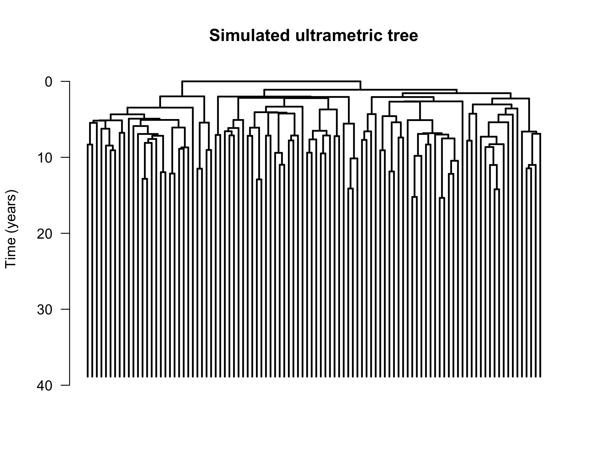
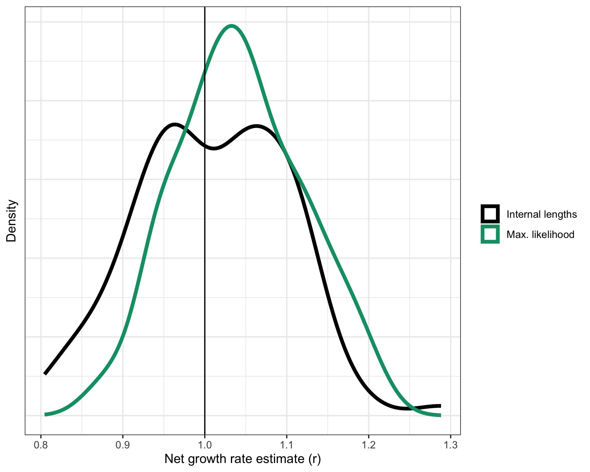

The goal of cloneRate is to provide easily accessible methods for estimating the growth rate of clones. The input should either be an ultrametric phylogenetic tree with edge lengths corresponding to time, or a non-ultrametric phylogenetic tree with edge lengths corresponding to mutation counts. This package provides the internal lengths and maximum likelihood methods for ultrametric trees and the shared mutations method for mutation-based trees, all of which are from our recent preprint Estimating single cell clonal dynamics in human blood using coalescent theory.
As a bonus, we provide a fast way to simulate the coalescent (tree) of a sample from a birth-death branching tree. A direct result of Amaury Lambert’s work, we use this fast simulation technique to validate our growth rate estimates.
Installation
You can install the development version of cloneRate from GitHub with:
# Install devtools if you don't have it already
install.packages(setdiff("devtools", rownames(installed.packages())))
# Install
devtools::install_github("bdj34/cloneRate")For this basic tutorial and our vignettes, we will also use several other packages, which can all be installed from CRAN. Because these are listed as packages we suggest, running the following command will install them along with the vignettes.
devtools::install_github("bdj34/cloneRate", build_vignettes = TRUE, dependencies = TRUE)Alternatively, you can install them manually:
install.packages(setdiff(c("ggplot2", "ggsurvfit", "survival", "car"), rownames(installed.packages())))Example
We’ll walk through simulating a single tree and plotting it, then apply our growth rate methods.
Simulate data
We can simulate a sample of size n from a birth-death tree as follows:
library(cloneRate)
library(ape)
library(ggplot2)
# Generate a sampled tree with 100 tips from a 20 year birth-death process with birth rate a=1 and death rate b=0.5
tree <- simUltra(a = 1, b = 0.5, cloneAge = 40, n = 100)Now that we have simulated the tree, let’s plot it:
# Plot, then add scale and title
plot.phylo(tree, direction = "downwards",
show.tip.label = FALSE, edge.width = 2)
axisPhylo(side = 2, backward = FALSE, las = 1)
title(main="Simulated ultrametric tree", ylab="Time (years)")
Estimate growth rate of one tree
We can use this tree as input to our methods for growth rate estimation:
# Estimate the growth rate r=a-b=0.5 using maximum likelihood
maxLike.df <- maxLikelihood(tree)
print(paste0("Max. likelihood estimate = ", round(maxLike.df$estimate, 3)))
#> [1] "Max. likelihood estimate = 0.415"
# Estimate the growth rate r=a-b=0.5 using internal lengths
intLengths.df <- internalLengths(tree)
print(paste0("Internal lengths estimate = ", round(intLengths.df$estimate, 3)))
#> [1] "Internal lengths estimate = 0.395"Estimate growth rate of many trees
In our paper, we use simulated trees to test our growth rate estimates. As an example, let’s load some simulated data that comes with our package, exampleUltraTrees has 100 ultrametric trees. In the “metadata” data.frame we will find the ground truth growth rate, which in this case is 1. Let’s apply our methods to all 100 trees.
# Here we are applying two methods to all of the ultrametric trees
resultsUltraMaxLike <- maxLikelihood(exampleUltraTrees)
resultsUltraLengths <- internalLengths(exampleUltraTrees)Notice how the functions maxLikelihood() and internalLengths() can take as input either a single tree or a list of trees. Either way, the output is a data.frame containing the results. Now that we have 100 estimates on 100 different trees from 2 different methods, let’s plot the distributions
# Combine all into one df for plotting. This works because the columns are the same
resultsCombined <- rbind(resultsUltraMaxLike, resultsUltraLengths)
# Plot, adding a vertical line at r=1 because that's the true growth rate
ggplot(resultsCombined) +
geom_density(aes(x = estimate, color = method)) +
geom_vline(xintercept = exampleUltraTrees[[1]]$metadata$r) +
theme_bw() + theme(axis.text.y = element_blank(), axis.ticks.y = element_blank(),
legend.title = element_blank())+
xlab("Net growth rate estimate (r)") + ylab("Density")+
scale_color_manual(labels = c("Internal lengths", "Max. likelihood"), values = c("black", "#009E73"))
Finally, let’s compute the root mean square error (RMSE) of the estimates. We expect maximum likelihood to perform the best by RMSE, but 100 is a relatively small sample size so anything could happen…
# Calculate the RMSE
groundTruth <- exampleUltraTrees[[1]]$metadata$r[1]
rmse <- unlist(lapply(
split(resultsCombined, resultsCombined$method),
function(x) {
sqrt(sum((x$estimate - groundTruth)^2) / length(x$estimate))
}
))
print(rmse)
#> lengths maxLike
#> 0.09823356 0.09333771As expected, maximum likelihood performs the best. Note that this may change if we regenerate the data. For more details, see the cloneRate website or vignettes:
References
Our package comes with 42 clones annotated from four distinct publications, which are the ones we use in our analysis. Note that there are three clones profiled at two different timepoints, meaning there are 39 unique clones. The papers which generate this data are:
The mathematical basis for our estimates is detailed in full in our paper.
Simulating the birth-death trees is a direct result of the work of Amaury Lambert in: